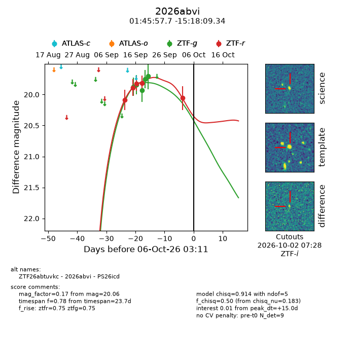
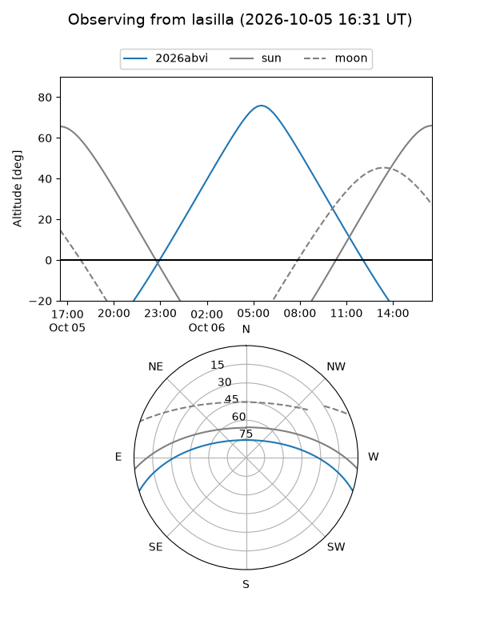
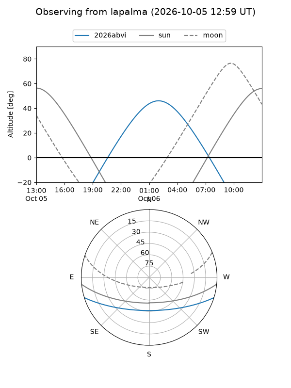
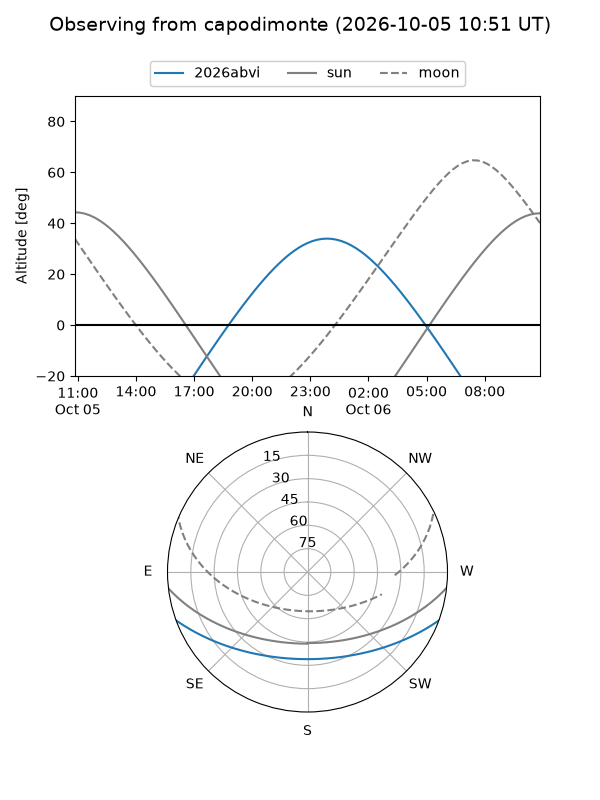
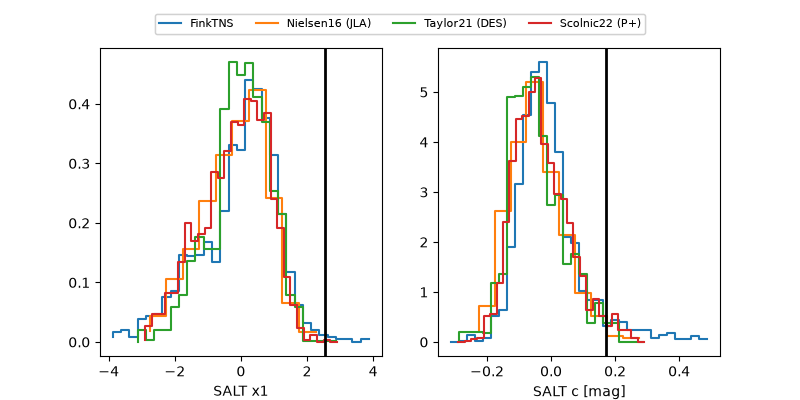

2026abvi
Target 2026abvi at 2026-10-06 03:13
Aliases and brokers:
FINK-ZTF: ztf.fink-portal.org/ZTF26abtuvkc
Lasair-ZTF: lasair-ztf.lsst.ac.uk/objects/ZTF26abtuvkc
ALeRCE-ZTF: alerce.online/object/ZTF26abtuvkc
YSE-PZ: ziggy.ucolick.org/yse/transient_detail/2026abvi
TNS name: wis-tns.org/object/2026abvi
Direct TNS query: direct search
alt names
ZTF26abtuvkc (ztf,fink_ztf)
2026abvi (tns,yse)
PS26icd (panstarrs)
Coordinates:
equatorial (ra, dec) = 26.4904,-15.30260
equatorial (HMS+DMS) = 01:45:57.71,-15:18:09.34
galactic (l, b) = (172.6654,-72.66844)
Flags:
TNS type: nan
peak dt: +15.0
Photometry:
last ztfg=19.70, ztfr=20.06
5 ztfg, 5 ztfr detections
Lightcurve

Visibility



Additional plots
